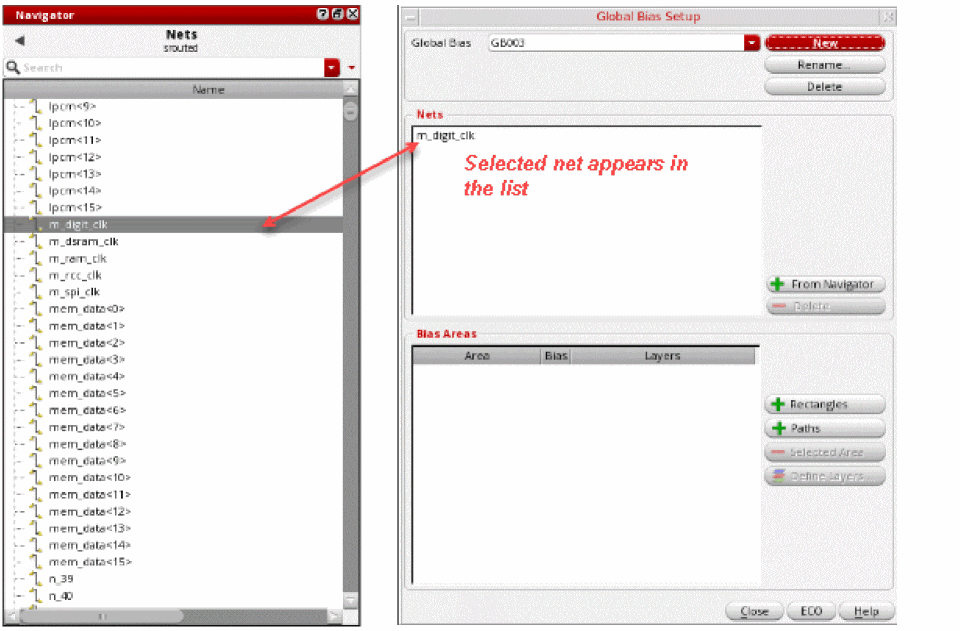
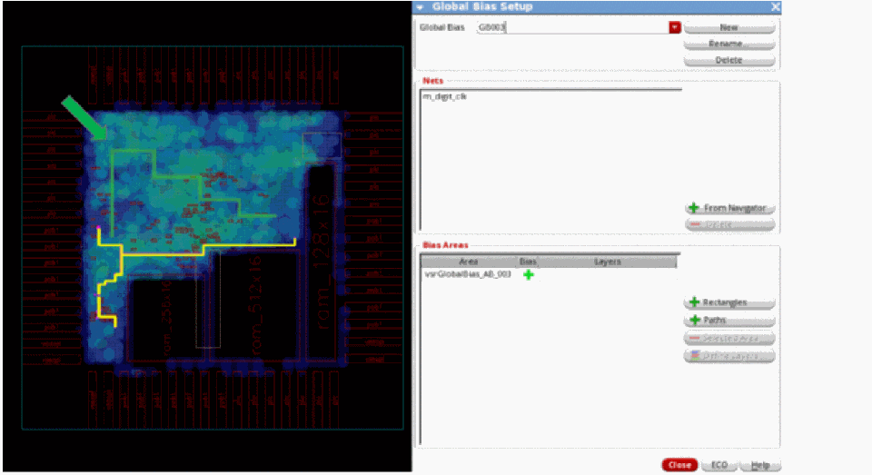
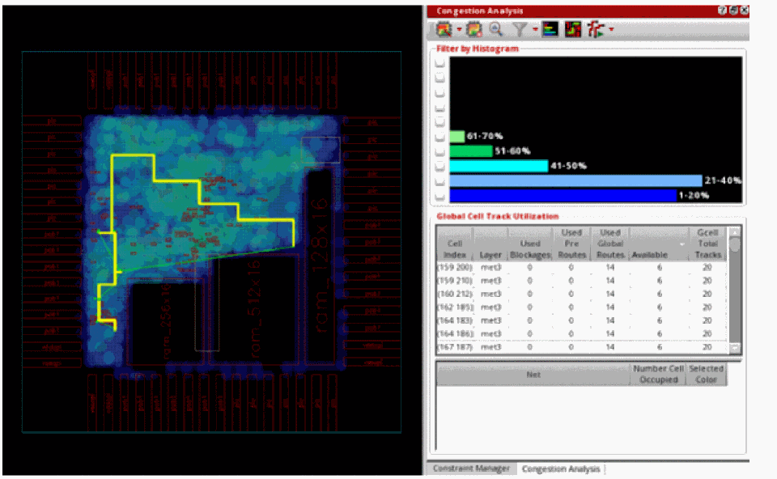

Creating a Global Bias Path Constraint
You can use global bias path constraints to guide a net, group of nets, or a bus along a pre-designated path during global routing. These path-biased nets take priority over the other nets during global routing. This means that the global router may push other nets out of the way and make them less optimal in routing.
Creating a path is similar to creating a polygon. To create a global bias path constraint:
- Select a net, group of nets, or a bus from the Navigator assistant. For example, select the net m_digit_clk from the Navigator assistant.
-
Click the Global Bias Setup icon
 on the Congestion Analysis assistant toolbar.
on the Congestion Analysis assistant toolbar.
The Global Bias Setup form displays. -
Click the New button to create a new global bias constraint group.
The form is updated to create a default group named as GB003. This is an auto-generated global bias name. Also, the net selected in the Navigator assistant appears in the Nets list box.
You can add and remove the nets to or from the Global Bias Setup form.
To add nets:- Select a net or a group of nets from the Navigator assistant.
- Click the + From Navigator button in the Global Bias Setup form.
The nets selected in the Navigator assistant get displayed in the Nets list box.
To remove nets:
The selected net is removed. - To edit the global bias constraint group name, click in the Global Bias text field and specify another name.
- To add the path bias constraint, click the + Paths button.
-
Click and drag to draw a path that you want the net to take in the heat map.
The path created on the heat map is used as the coordinates for the bias path. The bias path is automatically assigned a name called vsrGlobalBias_AB_003 and is displayed in the Bias Areas list box.
If you have created an incorrect region, you can delete it. To do so: -
To see how the new constraint alters routing and congestion, click the ECO button in the Global Bias Setup form or click the Global Route and ECO Congestion Analysis option from the Congestion Analysis drop-down list.
The following figure shows that the net now follows the bias path constraint.

Related Topics
Creating a Global Bias Negative Region Constraint
Creating a Global Bias Positive Region Constraint
Creating Multiple Global Bias Constraints for Specific Layers
Return to top